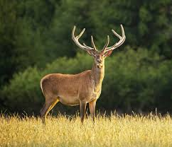
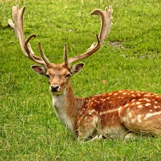
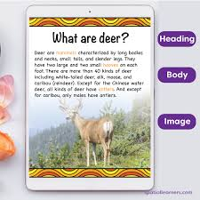

1.What is a Deer?
A male deer is called a buck but some larger males are referred to as stags. A Female deer is called a doe or hind. A young deer is called a fawn. Bucks and does can be distinguished from each other by the presence of antlers.


2.Name any 2 Facts about deer
Scottish Red Deer are the largest land mammal in Britain. ...
Red Deer are very social animals and are known for living in herds. ...
To know more fact click - Show more
We have a lot about:
1.Dear;
2.Types of Dear;
3.Dears' Body Parts;
4.Interesting Facts of Dear;